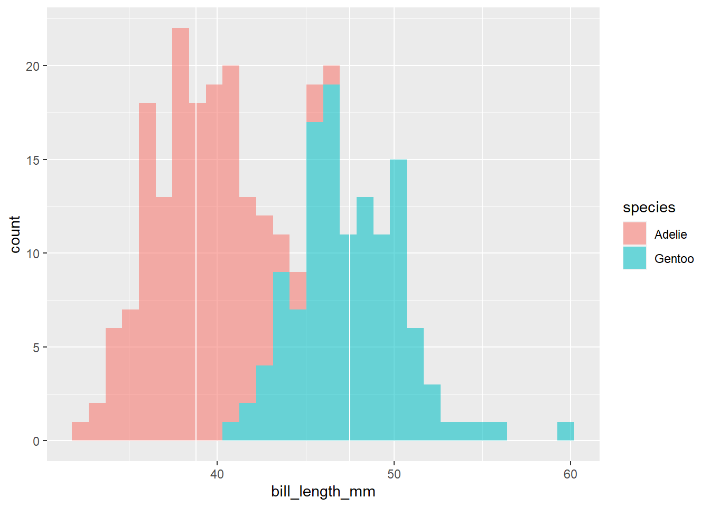

9 Power
Libraries needed for today (either copy and paste below or source() your setup script if you’ve been using that!):
The null hypotheses for each test we have learned thus far:
Levene test - Variances across groups are equal (homogeneity of variances).
Shapiro-Wilk test - Data is drawn from a normal distribution.
t-test - Means of the two groups are equal.
ANOVA - Means of all groups are equal.
Correlation - There is no correlation between the two variables.
Simple linear regression - There is no linear relationship between the predictor and response variables.
Multiple linear regression
Overall model - All regression coefficients equal zero (i.e., there is no effect from predictors).
Individual predictors - An individual regression coefficient equals zero (no effect for a specific predictor).
Power in statistics is a measure of how effective a statistical test is at finding genuine trends/effects in your data. It tells you the likelihood that the test will correctly identify a real relationship or effect when one actually exists. In other words, power is the test’s ability to avoid missing important discoveries, an essential aspect of the reliability and accuracy of statistical analyses. Power can be influenced by the following factors:
Sample size - Larger samples provide more power.
Effect size - Larger or more dramatic effects are easier to detect.
Power is also related to our p-values: if we want our test’s conclusions to hold greater significance, we require more power.
Significance in statistics means how important or reliable a finding is. p-values help quantify this by telling us how likely it is that our results occurred by chance; smaller p-values indicate greater significance, suggesting that our findings are less likely due to chance.
9.0.1 Power in action
Let’s perform a t-test analysis on our Palmer penguins data set, where we compare bill length across two penguins species, Gentoo and Adelie.
data("penguins")
penguins %>%
filter(species %in% c("Adelie", "Gentoo")) %>%
# species must be re-formatted as text to get rid of previous factoring.
# this needs to happen for t_test to work later.
mutate(species = as.character(species)) %>%
t_test(bill_length_mm ~ species, var.equal = FALSE, detailed = FALSE)## # A tibble: 1 × 8
## .y. group1 group2 n1 n2 statistic df p
## * <chr> <chr> <chr> <int> <int> <dbl> <dbl> <dbl>
## 1 bill_length_mm Adelie Gentoo 151 123 -24.7 243. 3.09e-689.0.1.1 Sample size
In our analysis above, we find that bill length is observed to be significantly higher (p-value < 0.05) in Gentoo penguins when compared to Adelie penguins. But, what if we didn’t have as many observations to perform our test on? Let’s cut our data set down to just two observations per species:
penguins %>% filter(species %in% c("Adelie", "Gentoo")) %>%
# species must be re-formatted as text to get rid of previous factoring.
# this needs to happen for t_test to work later.
mutate(species = as.character(species)) %>%
drop_na(bill_length_mm) %>% group_by(species) %>%
slice_sample(n = 2) %>%
# we need to upgroup our data frame for statistical tests
ungroup() %>%
t_test(bill_length_mm ~ species, var.equal = FALSE, detailed = FALSE)## # A tibble: 1 × 8
## .y. group1 group2 n1 n2 statistic df p
## * <chr> <chr> <chr> <int> <int> <dbl> <dbl> <dbl>
## 1 bill_length_mm Adelie Gentoo 2 2 -1.95 1.97 0.191With a sample of just n=2 penguins of each species, we do not have enough power to detect a significant difference in bill length between species. Comparing our p-value to our significance threshold of 0.05, it is clear that we fail to reject the null hypothesis. Therefore, as sample size decreases, so does our power in identifying true trends.
9.0.1.2 Magnitude of effect
Let’s look at a histogram of our bill lengths across our two penguin species. Note the last two lines of code I am adding a vertical line at the mean of each group, which we got from the output of the t-test.
penguins %>%
filter(species %in% c("Adelie", "Gentoo")) %>%
ggplot() +
geom_histogram(aes(x = bill_length_mm, fill = species), alpha = 0.56) +
geom_vline(xintercept = 38.8) +
geom_vline(xintercept = 47.5)
In the grand scheme of things the difference between these two populations is relatively small in magnitude: their histograms overlap, indicating that some penguins in both species often have similar bill lengths. But, what if the bills of all of the Gentoo penguins magically grew an extra 15 mm?
penguins %>%
filter(species %in% c("Adelie", "Gentoo")) %>%
#for all Gentoo species increase bill length by 15 mm
mutate(bill_length_mm = ifelse(species == "Gentoo", bill_length_mm + 15, bill_length_mm)) %>%
ggplot() +
geom_histogram(aes(x = bill_length_mm, fill = species), alpha = 0.56) +
geom_vline(xintercept = 38.8) +
geom_vline(xintercept = 62.5)penguins %>%
filter(species %in% c("Adelie", "Gentoo")) %>%
# species must be re-formatted as text to get rid of previous factoring.
# this needs to happen for t_test to work later.
mutate(species = as.character(species)) %>%
drop_na(bill_length_mm) %>%
#if species == Gentoo, add 15 to bill length..
mutate(bill_length_mm = ifelse(species == "Gentoo", bill_length_mm + 15,
# otherwise, keep it as is.
bill_length_mm)) %>%
t_test(bill_length_mm ~ species,
var.equal = FALSE,
detailed = FALSE)## # A tibble: 1 × 8
## .y. group1 group2 n1 n2 statistic df p
## * <chr> <chr> <chr> <int> <int> <dbl> <dbl> <dbl>
## 1 bill_length_mm Adelie Gentoo 151 123 -67.3 243. 6.46e-159… when the magnitude of the difference between our observations in our groups increases, our p-value decreases. And, when you have a greater difference between populations, the number of observations required to identify significant differences generally does not have to be so high.
Lets run the above code again but keep just two observations from each group and note the p-value:
penguins %>%
filter(species %in% c("Adelie", "Gentoo")) %>%
# species must be re-formatted as text to get rid of previous factoring.
# this needs to happen for t_test to work later.
mutate(species = as.character(species)) %>%
mutate(bill_length_mm = ifelse(species == "Gentoo", bill_length_mm + 15, bill_length_mm)) %>%
# remove NA values for weight
drop_na(bill_length_mm) %>%
group_by(species) %>%
# select 2 random observations from each species:
slice_sample(n = 2) %>%
ungroup() %>%
t_test(bill_length_mm ~ species, var.equal = FALSE, detailed = FALSE)## # A tibble: 1 × 8
## .y. group1 group2 n1 n2 statistic df p
## * <chr> <chr> <chr> <int> <int> <dbl> <dbl> <dbl>
## 1 bill_length_mm Adelie Gentoo 2 2 -11.9 1.79 0.01039.0.2 Note about random selection
If you are playing around with this code on your own, you may notice that the results of each test look different than what’s written in the lesson plan: this is because we are randomly selecting a subset from our penguins populations with the slice_sample() function. In fact, you may have encountered p-values that lead to different conclusions for you (especially those with low sample sizes). The way we select samples from a population significantly impacts our statistical results and the statistical power of our tests. If our samples are representative of the population and sufficiently large, our findings are more likely to accurately reflect reality. However, if our samples are small or not truly representative, our results may be less reliable, and our tests may lack the ability to detect real effects.
9.1 Assignment
Let’s re-explore the difference in weight of cutthroat trout in clear cut (CC) and old growth (OG) forest types from our T-test and ANOVA lesson. We want to see how sample size affects our ability to detect this difference. Therefore, our research question is: “Is there a significant difference in weight between old growth and clear cut forest types?” We will set our significance level at 0.05 (i.e., our test’s p-value must be below 0.05 for us to reject the null hypothesis).
First load in your data and create a new variable trout for just the trout species:
data(and_vertebrates)
trout <-
and_vertebrates %>%
#filter species (remember spelling and capitalization are IMPORTANT)
filter(species == "Cutthroat trout") %>%
# remove NA values for weight, the variable we will be measuring
drop_na(weight_g) Next, we will select a random set of trout observations at both forest types across four different sample sizes: 5, 10, 1000, 5000. Here, I have created the first object of 5 observations per forest type for you:
trout_5 <- trout %>%
#group by section to pull observations from each group
group_by(section) %>%
slice_sample(n = 5) %>%
# ungroup the data frame to perform the statistical test
ungroup() %>%
t_test(weight_g ~ section, var.equal = FALSE, detailed = FALSE)1. Write a function called trout_subber that takes a user-selected number of random observations (the thing that changes) from our trout data frame across both forest types (i.e., section).
HINTS: the number of observations you want to subset to will be an argument of the function. The code I’ve written above can be used as the basis of the function. Follow steps in the Posit Primer, How to write a function - Workflow.
2. Build upon the previous function by adding an additional step to perform a t-test on the data set at the end, and to return the results of that t-test. (NOTE: for simplicity, use the non-parametric t-test across all sub sets).
3. Map over the function above, using our sample sizes of interest (i.e., 5, 10, 1000, 5000 per forest type). Repeat the process 100 times for each sample size to account for variability. The final outcome of this exercise should be a single data frame with 400 rows that includes all of our t-test summaries stacked on top of each other.
HINTS: what does `rep()` do? Follow along with the Posit Primer lesson, Iterate - Map.
4. Using the data frame created in exercise 3, make a histogram of p-values for each sample size group (HINT: see what column name in your final data frame you should facet by). Make note of how the p-values and their variance change with sample size.
9.2 Citations
Data Source: Gregory, S.V. and I. Arismendi. 2020. Aquatic Vertebrate Population Study in Mack Creek, Andrews Experimental Forest, 1987 to present ver 14. Environmental Data Initiative. https://doi.org/10.6073/pasta/7c78d662e847cdbe33584add8f809165
Horst AM, Hill AP, Gorman KB (2020). palmerpenguins: Palmer Archipelago (Antarctica) penguin data. R package version 0.1.0. https://allisonhorst.github.io/palmerpenguins/. doi: 10.5281/zenodo.3960218.